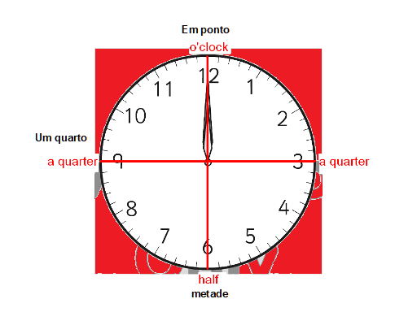

O passo seguinte, e dividir o relogio ao meio na horizontal.
Nosso relogio ficara dividido em (4/4) quatro quartos iguais.
Cada (1/4) um quarto vai ter um nome distinto, os das estremidades da esquerda e direita
do circulo seraõ chamados (1/4)um quarto, em ingles(a quarter , ou one quarter),
que corresponde a 1/4 da hora completa ou seja 15 minutos.
Os das estremidades; inferior ou abaixo, vai chamar-se metade,em
ingles(half),metade da hora completa ou 30 minutos.
O da extremidade superior ou acima, sera chamado Hora exata ou
hora em ponto que em ingles e (o'clock). Feito isso, o proximo passo,
será, como dizer as horas corretamente em ingles.
Então, vamos aprender Ingles.:

 Continuar
Continuar